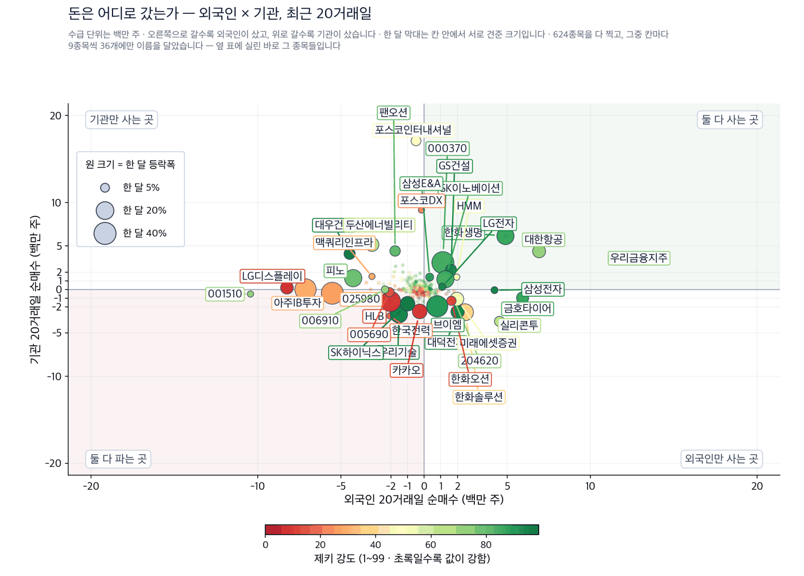
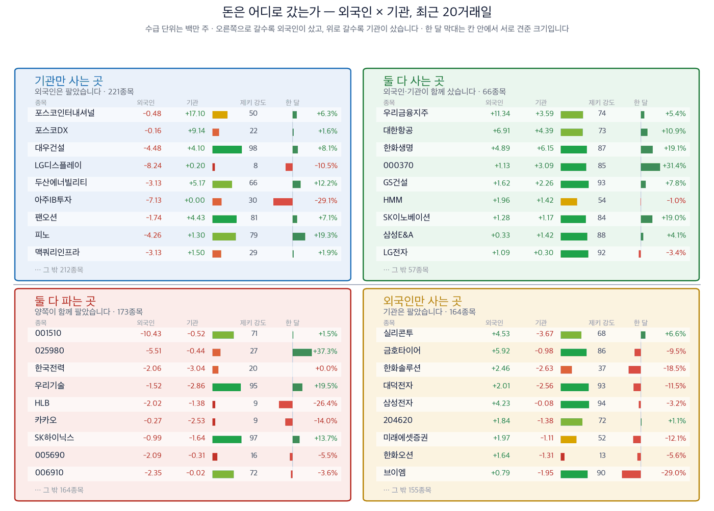

코스피가 7,000선을 내줬습니다 — 그날 오른 것은 발주가 나온 회사였습니다
코스피 6,909.91 | 코스닥 820.64 | 브렌트유 109.58달러 | 미 10년물 4.97% | 9월 미국 금리 인상 확률 88.7% |
중동 전쟁이 유가와 금리를 같은 날 밀어 올렸습니다. 브렌트유는 장중 배럴당 109.58달러까지 올랐고, 미국 10년 만기 국채금리는 4.97%까지 뛰었습니다. 30년물은 5.38%로 2007년 6월 이후 가장 높았습니다. 9월 11일 코스피는 1.76% 내린 6,909.91로 마쳐 7,000선을 내줬고, 코스닥은 1.95% 내렸습니다. (매일경제 9월 12일자)
값이 내린 날에도 오른 종목이 있었습니다. 공통점은 기대가 아니라 계약서와 승인서였습니다. 사우디에서 공사를 따냈거나, 짓겠다고 공시한 공장이 있거나, 군의 성능시험을 통과한 회사들입니다. 오늘은 그 세 가지 테마에서 네 종목을 봅니다.
제키 신호등

| 켜진 등 | 오늘의 국면입니다. 초록은 매수 우위, 노랑은 관망, 빨강은 매수 자제입니다. |
| 채워진 칸 | 7가지 조건 중 몇 개를 통과했는지입니다. 칸이 많이 찰수록 시장 구조가 튼튼합니다. |
| 칸이 다 찼는데 노랑·빨강이면 | 다른 이유로 한 단계 낮춘 것입니다. 그림 아래에 그 이유를 적었습니다. |
초록불은 매수 우위, 노란불은 관망, 빨간불은 매수 자제를 뜻합니다. 코스피는 7가지를 다 넘겼지만 추세 지표가 음수여서 한 단계 낮춘 노란불입니다. 코스닥은 2가지만 넘겨 빨간불입니다.
- 유가와 금리가 같이 오르는 동안에는 값이 아니라 수주를 보십시오. 9월 11일 하루에 사우디 비료 플랜트 계약과 국내 엔진 증설 투자가 나왔습니다. 두 소식 모두 해당 종목을 끌어올렸습니다.
- 저희가 세어 보니 하반기 상승률 1위 업종은 건설이었습니다. 은행과 보험이 금리와 배당으로 오르던 자리를 실제 발주가 대신하고 있습니다.
- 다만 네 종목 가운데 제키 강도가 90을 넘은 곳은 없습니다. 이야기는 새것이지만 값은 아직 앞서가지 않았다는 뜻이고, 그래서 아래 표에 확인 신호를 함께 적었습니다.
먼저, 이번 주 경제
| 날짜 | 무엇을 보는가 | 넘으면 어떻게 되는가 |
|---|---|---|
| 9월 14일 월요일 | 한국 증시 이번 주 첫 거래 | 유가와 금리 충격을 지수가 어떻게 받아내는지 처음 확인됩니다 |
| 9월 16일 수요일 | 미국 통화정책 회의 | 금리를 올리면 원화가 약해지고 외국인 순매수가 먼저 끊깁니다 |
테마 1 · 데이터센터에 들어가는 발전엔진
인공지능 데이터센터는 전기를 스스로 만들어야 합니다. 배에 싣던 중형 발전엔진이 그 자리에 들어가기 시작했습니다. HD현대중공업이 1조1000억원을 들여 엔진 공장을 짓겠다고 밝혔습니다. 생산능력은 3GW에서 7.2GW로 늘어납니다. 엔진을 만들거나 고치는 회사들이 함께 올랐습니다. (한국경제 9월 12일자)
| 누가 | HD현대마린솔루션 |
| 무엇을 | 힘센 엔진의 순정 부품을 독점 공급하고 유지보수를 맡고 있습니다 |
| 언제 | 9월 10일 투자 계획이 공시된 뒤 이틀 동안 올랐습니다 |
| 어디서 | 울산과 영암의 신규 엔진 생산기지가 근거지입니다 |
| 왜 | 엔진이 많이 깔릴수록 고쳐야 할 엔진도 늘어나기 때문입니다 |
| 어떻게 | 증권가는 2030년 이 회사의 데이터센터 엔진 유지보수 영업이익을 901억원으로 봅니다 (NH투자증권 정연승 연구원) |
9월 10일 9.03% 오른 데 이어 11일에도 7.63% 올랐습니다. 다만 석 달로 보면 아직 마이너스이고, 52주 고점에도 한참 못 미칩니다. 이틀 상승이 소식에 대한 반응인지 아직 갈립니다.
| 누가 | 한화엔진 |
| 무엇을 | 선박용·발전용 엔진을 만듭니다 |
| 언제 | 9월 11일 4.03% 올랐습니다 |
| 어디서 | 국내 엔진 업종 전반으로 기대가 번졌습니다 |
| 왜 | 데이터센터 엔진 시장이 커지면 엔진을 만드는 곳이 함께 늘기 때문입니다 |
| 어떻게 | 기관이 20일 동안 93만주를 사들였습니다 (기준일 9월 9일) |
테마 2 · 중동에서 나온 공사 발주
전쟁이 유가를 올리면 산유국의 곳간이 찹니다. 그 돈은 공장 발주로 돌아옵니다. 저희가 세어 보니 하반기 상승률 1위 업종은 건설이었고, 은행과 보험이 그 뒤였습니다. (한국경제 9월 12일자)
| 누가 | 삼성E&A |
| 무엇을 | 35억달러, 약 4조7000억원짜리 비료 플랜트 공사를 따냈습니다 |
| 언제 | 9월 11일 계약 체결을 알렸습니다 |
| 어디서 | 사우디 동부 주베일 산업단지이며 2030년 완공 예정입니다 |
| 왜 | 발주처인 사빅 애그리뉴트리언츠가 요소비료를 전량 수출하기 때문입니다 |
| 어떻게 | 올해 신규 수주가 12조3000억원이 되어 연간 목표 12조원을 이미 넘겼습니다 |
지난해 매출이 9조원이었으니 이번 한 건이 그 절반을 넘습니다. 쌓인 일감은 22조7000억원으로 약 2년 6개월치입니다. 외국인과 기관이 20일 동안 나란히 사들인 곳은 오늘 네 종목 가운데 여기뿐입니다.
테마 3 · 수입하던 무기를 국산으로
그동안 정부는 소형 공격드론을 해외에서 사려 했습니다. 국내 기술이 요구 성능에 못 미친다고 봤기 때문입니다. 그 판단이 9월에 바뀌었습니다. (한국경제 9월 12일자)
| 누가 | 풍산 |
| 무엇을 | 소형 공격드론 MUF-I를 자체 개발했습니다 |
| 언제 | 국방기술진흥연구소가 최종 성능시험 기준 충족 판정을 내렸습니다 |
| 어디서 | 공군 비상활주로와 충남 보령 일대에서 시험했습니다 |
| 왜 | 국내 기술이 입증되어 해외 구매를 국내 구매로 바꿀 근거가 생겼기 때문입니다 |
| 어떻게 | 작전 반경과 명중률 등 9개 평가 항목을 모두 통과했고, 군은 이르면 2027년이나 2028년에 대규모 구매 공고를 낼 것으로 알려졌습니다 |
값은 아직 따라오지 않았습니다. 한 달로는 내렸고 52주 고점과의 거리도 네 종목 가운데 가장 멉니다. 기관은 20일 동안 31만주를 샀지만 외국인은 22만주를 팔았습니다. 승인은 나왔고 발주는 아직 안 나온 자리입니다.
오늘 찾은 것, 한 장으로
| 테마 | 종목 | 제키 강도 | 근거의 무게 |
|---|---|---|---|
| 데이터센터 발전엔진 | HD현대마린솔루션 (443060) | 64 | 확인 필요 |
| 데이터센터 발전엔진 | 한화엔진 (082740) | 54 | 확인 필요 |
| 중동 공사 발주 | 삼성E&A (028050) | 86 | 근거 확실 |
| 국산 공격드론 | 풍산 (103140) | 27 | 확인 필요 |
근거의 무게 — 네 가지를 세었습니다
한 달 상승, 제키 강도 90 이상, 외국인 20일 순매수, 기관 20일 순매수를 각각 셉니다. 값은 9월 10일 종가, 수급은 9월 9일까지입니다.
| 종목 | ①값이 올랐나 | ②강도 90↑ | ③외국인 순매수 | ④기관 순매수 | 충족 | 근거의 무게 |
|---|---|---|---|---|---|---|
| HD현대마린솔루션 (443060) | O | X | O | X | 2/4 | 확인 필요 |
| 한화엔진 (082740) | O | X | X | O | 2/4 | 확인 필요 |
| 삼성E&A (028050) | O | X | O | O | 3/4 | 근거 있음 |
| 풍산 (103140) | X | X | X | O | 1/4 | 확인 필요 |
기관과 외국인은 어디로 갔나
한국거래소가 공시한 순매수 주수를 20거래일로 더했습니다. 저희 계산이 아니라 공시된 값입니다. 종목마다 마지막 기록일이 달라 기준일은 9월 9일입니다. 이름을 확인한 208종목을 모두 그렸습니다.

| 점 하나 | 종목 하나입니다. 가로·세로 위치가 두 값을 그대로 나타내고, 가운데 가로·세로로 그어진 두 선이 기준선입니다. 네 귀퉁이의 이름표가 그 칸의 뜻입니다. |
| 점 크기 | 최근 한 달 등락폭입니다. 오르든 내리든 크게 움직였으면 큰 점입니다. |
| 점 색 | 제키 강도입니다. 초록일수록 주가가 시장에서 강합니다. |
| 30종목만 | 이름이 겹치면 못 읽기 때문입니다. 가운데 몰린 나머지는 움직임이 거의 없는 종목들이라 뺐습니다. |

| 네 칸 | 가로와 세로 두 값이 각각 기준선을 넘었는지로 넷을 가릅니다. 오른쪽 위는 둘 다 넘은 곳, 왼쪽 아래는 둘 다 못 넘은 곳, 나머지 두 칸은 한쪽만 넘은 곳입니다. 칸 이름이 그 칸에 든 종목의 상태를 한 문장으로 적어 둔 것입니다. |
| 가운데 두 칸 | 두 기간을 견주는 자리입니다. 글자 A~E가 있으면 이 업계가 쓰는 표준 등급으로, A는 강한 매수, B는 매수 우세, C는 매수와 매도가 반반, D는 매도 우세, E는 강한 매도를 뜻합니다(전체를 다섯으로 나눈 순위라 A가 상위 20%입니다). 숫자가 있으면 그 기간의 순매수 규모입니다. |
| 칸마다 9종목 | 그 칸에서 움직임이 가장 큰 순서입니다. 나머지는 칸 아래에 몇 종목인지만 적었습니다. 옆 산점도가 이름을 다는 종목이 바로 이 9종목씩입니다. |
| 한 달 막대 | 0을 가운데 두고 오른쪽이 상승, 왼쪽이 하락입니다. 길이는 같은 칸 안에서만 서로 견주십시오 — 칸마다 기준이 다릅니다. |
| 제키 강도 | 1~99 순위입니다. 막대가 길수록, 초록에 가까울수록 그 종목의 주가가 시장에서 강합니다. |
찾아낸 종목에 자금이 따라왔는가
기사가 맞아도 자금은 따로 봅니다. 위에서 고른 네 종목의 20거래일 순매수를 주수 그대로 적었습니다. 한국거래소 공시값이며 기준일은 9월 9일입니다. 플러스는 순매수, 마이너스는 순매도입니다.
| 종목 | 외국인 20일 | 기관 20일 | 한 줄로 |
|---|---|---|---|
| 삼성E&A (028050) | +33만주 | +142만주 | 양쪽이 함께 샀습니다 |
| 한화엔진 (082740) | -67만주 | +94만주 | 기관만 샀습니다 |
| HD현대마린솔루션 (443060) | +14만주 | -3만주 | 외국인만 샀습니다 |
| 풍산 (103140) | -22만주 | +31만주 | 기관만 샀습니다 |
이 표는 지금까지 누가 샀는지를 보여 줄 뿐이며 앞으로의 값을 예고하지 않습니다. 저희가 두 시장에서 검정해 보니 수급만으로는 다음 한 달을 맞히지 못했습니다.
업종 순위
9월 10일 기준 상위 업종입니다. 석유와가스(1위) · 생명보험(2위) · 반도체와반도체장비(3위) · 건설(4위, +2계단) · 전기장비(5위).
석유와가스가 1위입니다. 건설은 두 계단 올라 4위가 됐습니다. 오늘 고른 종목이 걸린 자리와 같습니다.
장중 체크리스트
한국 증시는 토요일과 일요일에 쉽니다. 아래는 9월 14일 월요일 개장부터 볼 것입니다.
- 개장 30분 — 원·달러 환율이 금요일 종가보다 높게 열리는지 봅니다. 환율이 오르면 외국인 순매수가 먼저 끊깁니다.
- 개장 30분 — 브렌트유가 100달러 위에 있는지 봅니다. 아래로 내려오면 오늘 고른 세 테마가 같이 약해집니다.
- 개장 30분 — 미국 10년물이 5% 위에 머무르는지 봅니다. 5%를 넘어 머무르면 값이 비싼 종목부터 팔립니다.
- 마감 30분 — 외국인 선물 순매수가 매수로 돌아서는지 봅니다. 지수가 7,000선을 되찾는 조건입니다.
이 다이제스트를 읽는 법
- 제키 강도 — 저희가 보는 종목 가운데 값이 몇 등인지를 1에서 99로 매긴 값입니다. 90 이상이면 상위 10%입니다.
- 제키 신호등 — 시장 국면을 7가지 조건으로 세어 초록·노랑·빨강으로 나눈 것입니다.
- 근거의 무게 — 네 가지 가운데 몇 가지를 넘었는지입니다. 충족 수가 딱지를 정합니다.